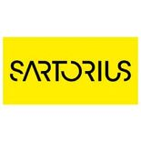

Python Software Developer

- Formacion de grado superior.
- Minimo de 1 año de experiencia
Requisits
-Bachelor's or Master's degree in Computer Science or a related field
-Proven experience with Python (and preferably IronPython hybrid) development
-Solid understanding of REST and SOAP APIs
-Knowledge of .NET (C#) and some familiarity with SQL programming language is preferred but not mandatory
-As your future team is mostly based in Germany, your English is fluent
If you are a self-motivated individual with a passion for software development and a desire to work in a dynamic and challenging environment, we would love to hear from you.
What we offer
Our ambition is to simplify progress in life science research and the biopharmaceutical industry to help
translate scientific findings into new therapeutics faster and more efficiently. So that more people can
obtain access to better medicine. Nearly 15,000 employees at more than 60 production and sales locations
worldwide are committed to this vision. And together, we have grown strongly over the past years. Do you
also want to contribute to our vision? Grow with us and benefit from working with a Global Player that has
kept its familiar atmosphere:
-Opportunity for international career development: a global network offering seminars and training sessions, expert and manager career paths
-Open and highly collaborative culture: mutual support within teams and working as equals, team spirit and international collaboration
-Work-life balance: Working from home at many sites
-Intelligent working environment: working in smart buildings with the latest technology and equipment
-Ambitious goals: Sartorius plans to double its sales revenue approximately every five years and expects to grow even further.
Descripció
CategoriaInformática y telecomunicaciones - Programación
Número de vacants1
SalariNo disponible
Infojobs